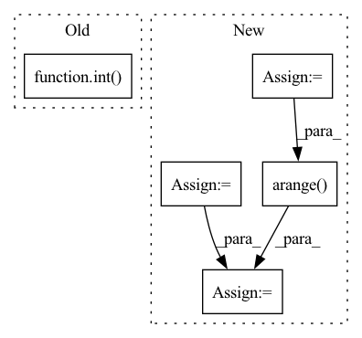

Pattern ID :10651

Before Change
if exists(mask):
logits = logits.masked_fill(~mask, -torch.finfo(logits.dtype).max)
num_keep = max(1, int((1 - dropout) * n))
keep_indices = logits.topk(num_keep, dim = 1).indices
batch_indices = torch.arange(b, device = device)
After Change
logits = logits.masked_fill(~mask, -torch.finfo(logits.dtype).max)
keep_prob = 1. - dropout
num_keep = max(1, int(keep_prob * n))
keep_indices = logits.topk(num_keep, dim = 1).indices
batch_indices = torch.arange(b, device = device)
batch_indices = rearrange(batch_indices, "b -> b 1")
seq = seq[batch_indices, keep_indices]
if exists(mask):
seq_counts = mask.sum(dim = -1)
seq_keep_counts = torch.ceil(seq_counts * keep_prob).int()
keep_mask = torch.arange(num_keep, device = device) < rearrange(seq_keep_counts, "b -> b 1")
mask = mask[batch_indices, keep_indices] & keep_mask
In pattern: SUPERPATTERN
Frequency: 3
Non-data size: 5
Instances
Fragment ID: 36880179
Project Name: lucidrains/perceiver-pytorch
Commit Name: c8c5f5721520460369a66b8a0e9c5147df4a883e
Time: 2022-12-04
Author: lucidrains@gmail.com
File Name: perceiver_pytorch/perceiver_io.py
M Class Name: AnonimousClass
N Class Name: AnonimousClass
M Method Name: dropout_seq(3)
N Method Name: dropout_seq(3)
M Parent Class:
N Parent Class:
M File Name: perceiver_pytorch/perceiver_io.py
N File Name: perceiver_pytorch/perceiver_io.py
M Start Line: 40
M End Line: 51
N Start Line: 40
N End Line: 56
'>
Before Change
class Posterize(Augmentation):
def __init__(self, v):
super().__init__()
v = int(v)
self.v = max(1, v)
def transform(self,X):
if X is not None:
After Change
def __init__(self, min_v,max_v,num_bins,magnitude,v=None):
super().__init__()
self.max_v=max_v
self.min_v=min_v
self.num_bins=num_bins
self.magnitude=magnitude
self.magnitudes=self.max_v - (torch.arange(self.num_bins) / ((self.num_bins - 1) / self.min_v)).round().int()
self.v=float(self.magnitudes[self.magnitude].item())if v is None else v
self.v = int(self.v)
self.v = max(1, self.v)
'>
Fragment ID: 36880177
Project Name: ygzwqzd/lamda-ssl
Commit Name: 28bb9dc9721a04a9faa17d8f0ae415097e6094bc
Time: 2022-02-07
Author: 1129198222@qq.com
File Name: Semi_sklearn/Data_Augmentation/Posterize.py
M Class Name: Posterize
N Class Name: Posterize
M Method Name: __init__(6)
N Method Name: __init__(2)
M Parent Class: Augmentation
N Parent Class: Augmentation
M File Name: Semi_sklearn/Data_Augmentation/Posterize.py
N File Name: Semi_sklearn/Data_Augmentation/Posterize.py
M Start Line: 4
M End Line: 7
N Start Line: 8
N End Line: 17
'>
Before Change
// compute MRR and Hits@k
mrr.append(1 / rank)
hits.append(int(rank <= k))
return mrr, hits
After Change
// get the scores of the true target subjects/objects
idx = 0 if direction == "s" else 2
targets = test_spo[:, idx].long()
arange = torch.arange(len(targets), dtype=torch.long, device="cpu")
true_scores = scores[arange, targets].view(-1, 1)
// remove the true subjects/objects from the scores so they don"t factor in rankings
scores = scores.clone()
scores[arange, targets] = float("-Inf")
// follow LibKGE protocol by taking the mean rank among all entities with same score
ranks = torch.sum(scores > true_scores, dim=1, dtype=torch.double)
num_ties = torch.sum(scores == true_scores, dim=1, dtype=torch.double)
ranks = ranks + num_ties // 2 + 1 // ranks are one-indexed
mrr = (1 / ranks).numpy()
hits = (ranks <= k).numpy()
return list(mrr), list(hits)
'>
Fragment ID: 36880145
Project Name: tsafavi/codex
Commit Name: 3dddca246e4fb616cef251bafb32dac648e8eedb
Time: 2020-07-08
Author: tsafavi@umich.edu
File Name: scripts/baseline.py
M Class Name: AnonimousClass
N Class Name: AnonimousClass
M Method Name: evaluate_rankings(5)
N Method Name: evaluate_rankings(5)
M Parent Class:
N Parent Class:
M File Name: scripts/baseline.py
N File Name: scripts/baseline.py
M Start Line: 129
M End Line: 151
N Start Line: 129
N End Line: 148